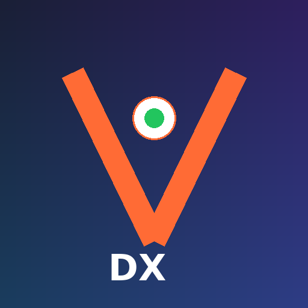

93.7% sensitivity for high-grade bladder cancer — but pathologists can only see results at their desktop workstation. What if they could get instant push alerts on mobile?

"Any update on Patient #12847?"
This happens 5x/day per urologist
Where is slide CYT-2847?
Manual tracking across 30 sites
VisioCyt® AI detected high-grade urothelial cells. Confidence: 94.2%. Immediate review recommended.
High-grade findings trigger immediate push notifications. Pathologists are alerted within seconds, not hours.
Alert time: 2 sec vs 4.6 hrsView AI analysis results, confidence scores, and cell annotations anywhere — between procedures, at rounds, or covering multiple sites.
Access: anywhere vs workstation-onlyTrack every sample from collection to analysis. No more phone calls to the lab asking "where's my specimen?"
Status calls: 0 vs 5/dayShare diagnostic reports directly with referring urologists via HIPAA-compliant mobile channel. One tap to send.
Share time: 1 tap vs fax/LIS150+ mobile engineers with React Native and healthcare compliance expertise. AI-powered development for 3x faster delivery.
Get in Touch